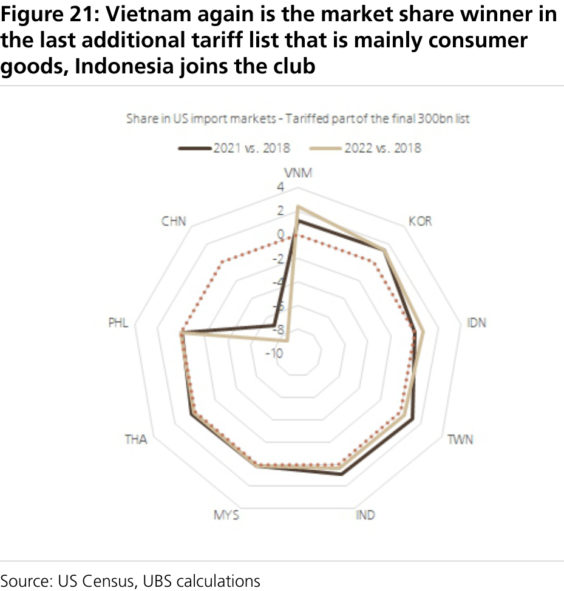
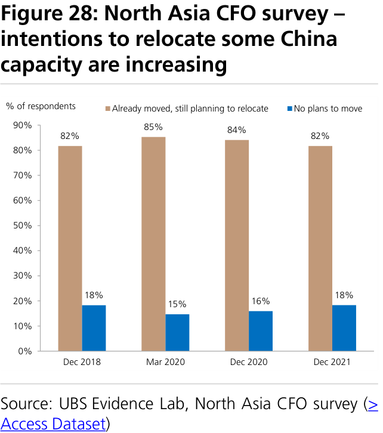
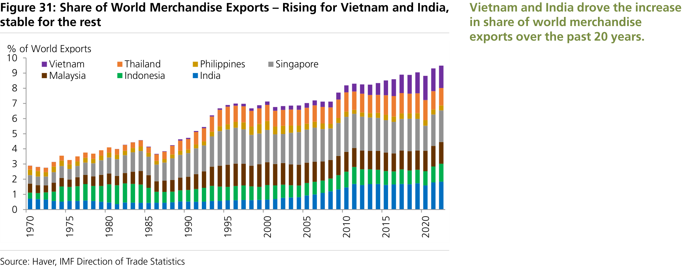
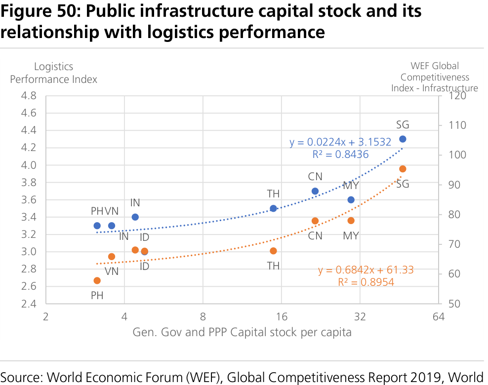
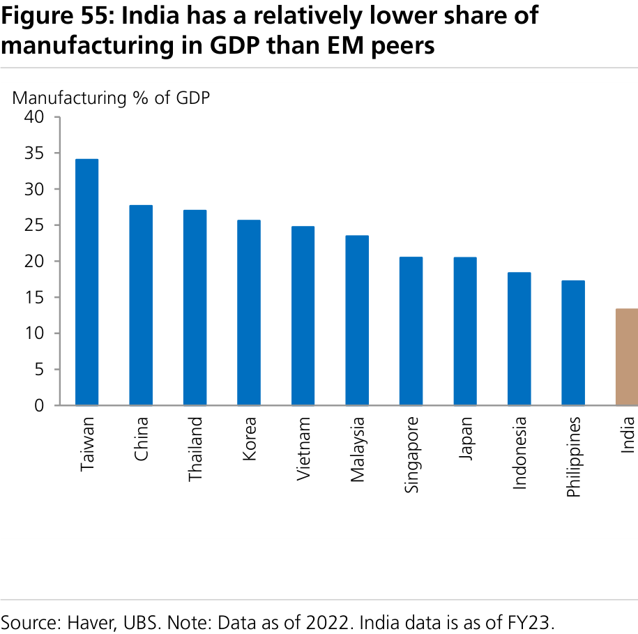
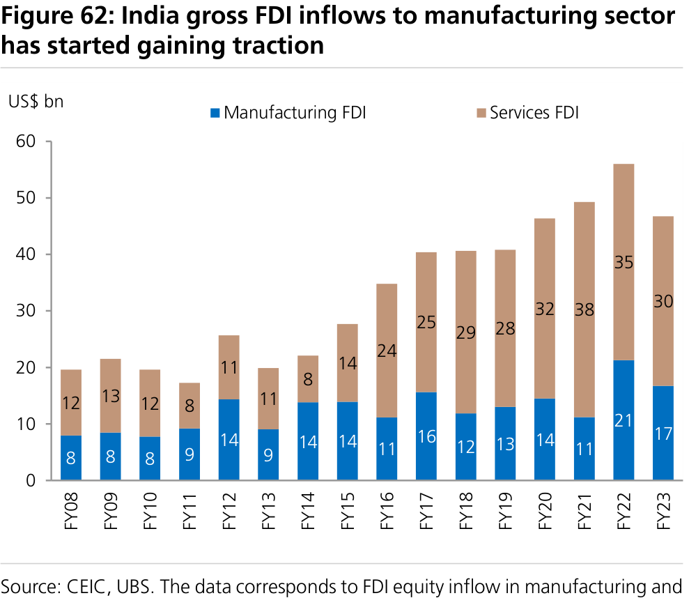
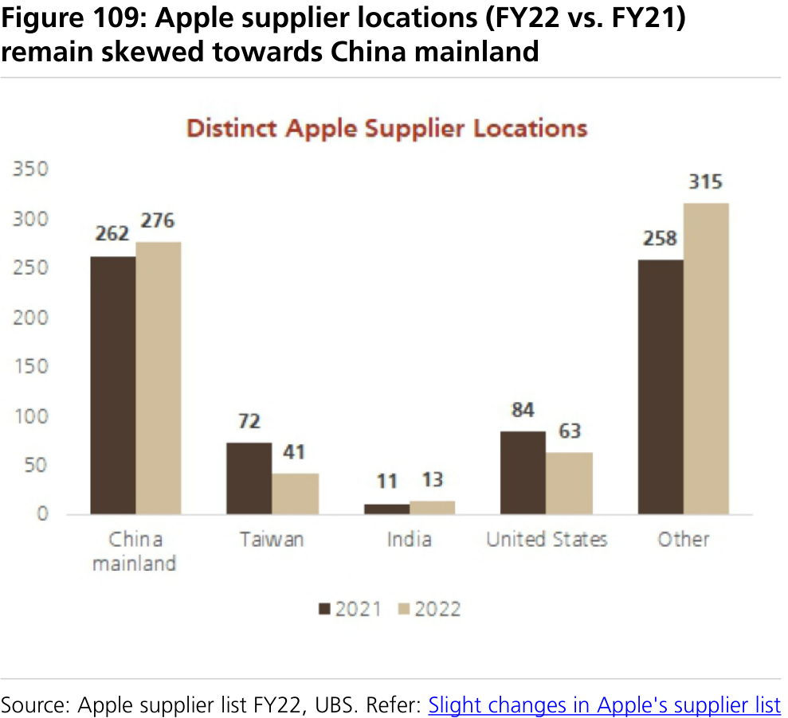

a b
Asia's supply chain shifts: who benefits, how much, and what's priced in
Reconfiguration of the China-centric regional supply chain to continue apace
Reshaped by the after-effects of the US-China trade war, pandemic disruptions, and rising political pressures to deglobalise, global supply chain reconfiguration is likely to accelerate going forward. This report leverages our UBS Asia Strategy team's previous Q- Series analysis that suggested that even if the bulk of manufacturing in China looks likely to stay, the natural evolution of China's comparative advantage opens up a gap for low- cost manufacturers to step into sectors that are more vulnerable to relocation. In this report, leveraging the expertise of UBS Asia Economics, Global Equity Research, and macro strategy analysts, we provide an integrated bird's eye view of the developing Asian economies that could gain from supply chain shifts, laying out their strengths and weaknesses across multiple dimensions.
Which countries in Asia can benefit from 'China + 1' supply chain shifts?
We use scorecard analysis to evaluate the potential of individual Asian economies to accommodate supply chain relocation based on a group of fundamental factors. Four conclusions emerge from our analysis. 1) No single economy has the potential to match the scale, size and competitiveness of China's onshore supply chain network. 2) Vietnam deftly rode the initial relocation wave as pre-existing domestic production networks and supply chain connections with China helped to give it a head start. However, the country is hampered by its relatively small-scale infrastructure and the gaps within it. 3) India is better placed in terms of size to match China's edge in low-cost, large-scale manufacturing. India's policy reforms and improving macro stability are clear advantages even though it is disadvantaged by high logistics costs, low labour productivity and regulatory impediments. 4) In the rest of Southeast Asia, higher production costs and a lack of scale remain key hindrances but a few of these economies may carve out a niche in areas where they have a comparative advantage. We highlight Malaysia's competitive position in the semiconductor industry, as well as Indonesia and Thailand's emerging credentials in the electric vehicle (EV) supply chain.
Growth implication for India and Vietnam from supply chain relocation
We build a framework to analyse the impact on India's potential growth (6% YoY) under various scenarios in which it gains market share in global goods exports. Were China+1 supply chain shifts to continue and India to benefit from the government's reform agenda and increased FDI, this could help India move towards 6.25-6.75% YoY growth by 2030 in our upside scenario and towards 6.75-7.25% YoY under a blue-sky scenario. The boost to direct job creation could be 1-4m per annum (with a similar indirect impact as well). Vietnam has been growing as a stable manufacturing hub. We expect continued supply chain relocation to play an important role in helping the country achieve its development goal of 7.0% annual GDP growth for 2021-30.
Market implications: what's priced into stocks?
Using a market-implied growth model, we observe that Indian and Thai equities appear to have priced in much stronger medium-term growth than pre-trade-war levels – some of this increase could be explained by some of the manufacturing opportunities being priced in. Looking at specific sectors, we see that industrials in India, Indonesia and Vietnam, materials in India and Malaysia, and the consumer sector in India have derated versus pre-trade-war levels, suggesting there is room for upside from this theme. See Figure 10 Potential beneficiaries of PLI [spel out] and suply chain shifts for a list of most favoured stocks.
Global Research and Evidence Lab
Economics
Asia
====================================================================================================
Contents
Asia's supply chain shifts: who benefits, how much, and what's
priced in . . . . . . . . . . . . . . . . . . . . . . . . . . . . . . . . . . . . . . . . . . . . 1
Executive Summary . . . . . . . . . . . . . . . . . . . . . . . . . . . . . . . . . . . 4
How big is the opportunity for developing Asia?. . . . . . . . . . . 10
China: the 'World's Factory' no more?. . . . . . . . . . . . . . . . . . . . . . . . . 10
How much of China's manufacturing is vulnerable to relocation and where
might it go? . . . . . . . . . . . . . . . . . . . . . . . . . . . . . . . . . . . . . . . . . . . . 15
Identifying winners and laggards in Asia ex China. . . . . . . . . . 18
Asia manufacturing: What is its value proposition?. . . . . . . . . . . . . . . . 18
Quick summary at country level - what is changing now?. . . . 29
India: an emerging new player. . . . . . . . . . . . . . . . . . . . . . . . . . . . . . . 29
Vietnam: the one star in China+1? . . . . . . . . . . . . . . . . . . . . . . . . . . . 40
Malaysia: an incumbent advantage . . . . . . . . . . . . . . . . . . . . . . . . . . . 45
Will Indonesia or Thailand emerge as the leading producer of EVs in
ASEAN? . . . . . . . . . . . . . . . . . . . . . . . . . . . . . . . . . . . . . . . . . . . . . . . 47
Case study to compare . . . . . . . . . . . . . . . . . . . . . . . . . . . . . . . . 51
Can Apple be for India what Samsung is for Vietnam? . . . . . . . . . . . . . 51
Market implications: What's priced in? . . . . . . . . . . . . . . . . . . . 56
Appendix. . . . . . . . . . . . . . . . . . . . . . . . . . . . . . . . . . . . . . . . . . . 59
====================================================================================================
Executive Summary
In this Q-Series Redux report, leveraging the expertise of UBS Asia Economics, Global Equity Research, and macro strategy analysts, we provide an integrated bird's eye view of the developing Asian economies that could gain from the global supply chain shifts currently under way. UBS strategists' analysis estimated that only 30% of China's gross exports are in industries that do not have strong competitive onshore supply chain advantages (mainly in electronics assembly industries). Here, we think the more structural factors, such as pollution control and rising wages, may drive this shift away from China in the sectors with competitive advantage. The UBS Global Tech team estimates that nearshoring momentum has also been picking up, especially in the semiconductor industry given the challenges in global supply chain management and local government incentive programmes. We analyse which developing Asian economies have the potential to optimise on the supply chain shift opportunity to boost their growth, manufacturing and employment prospects. Using a bottom-up approach, our strategy team then uses a framework to identify how respective sectors are placed to benefit, looking at market share trends under the supply chain shifts regime. For a summary of the key points, see our Q&A below.
Question 1: Who are the best candidates for supply chain relocation?
Answer: India and Vietnam stand out as attractive destinations for shifting supply chains – see Question 3 for reasons why. Malaysia may further develop its incumbent advantage in the electronics supply chain, while Indonesia and Thailand could make inroads into the EV supply chain. For more details, see country sections " Malaysia: an incumbent advantage " and " Will Indonesia or Thailand emerge as the leading producer of EVs in ASEAN? ").
UBS Research
Figure 1: The Candidates in Developing Asia ex-China
====================================================================================================
Question 2: Will China lose global market share in goods exports?
Question 3: What makes India and Vietnam attractive destinations for large-scale manufacturing in Asia?
Figure 2: China has been growing as a value-added contributor to the rest of Asia
Figure 3: Vietnam vs India vs China
====================================================================================================
India Vietnam
Question 4: What are the key advantages and limitations for other ASEAN economies?
Malaysia Philippines Thailand Indonesia Singapore
Figure 4: ASEAN-6
====================================================================================================
Question 5: What are the growth implications for India and Vietnam building in supply chain relocation?
Figure 5: Asia competitiveness scorecard: India and Vietnam emerging as two prospective destinations for supply chain relocation
====================================================================================================
growth
Figure 6: India's possible market share gains in global goods exports under the various scenarios
Figure 7: India's potential real GDP growth under various
Figure 8: Sectors where we think there is opportunity for India
Figure 9: Consumer electronics and traditional manufacturing goods such as footwear and furniture have been

====================================================================================================
Question 6: What are the key investment implications?
Most favoured stocks
Figure 10: Most favoured stocks by the relocation theme
====================================================================================================
How big is the opportunity for developing Asia?
China: the 'World's Factory' no more?
China's share of global manufactured exports fell in 2016-19, before rising during the pandemic.
Over 2015-19, China's export market share in labour-intensive consumer goods dropped, but it maintained its share in machinery and electrical equipment
Based on goods trade data, China has lost export market share in the US, whilst continuing to gain it within Asia
By geography, China ceded ground in the US market, and has lost share in labour-intensive goods. However, its role in regional supply chains is growing in importance.
This suggests a continued deepening of regional supply chains.
Nevertheless, the shift in some manufacturing activity away from China is likely to continue
Figure 11: China's share of global manufactured exports
Figure 12: China lost market share in the US, but gained it
====================================================================================================
Geopolitics, China's changing labour profile, and a reversal of pandemic gains could lead to a further shift of manufacturing away from China.
Figure 13: China has lost global export market share in labour-intensive goods exports
Figure 14: Increase in China's intermediate goods exports
Figure 15: That said, China has been growing as a value-added contributor to
====================================================================================================
The lasting impact of the US-China trade war
China's declining market share in the US appears to be a direct result of the trade war.
Till now, such shifts in the market seemed to be more structural than one-off, implying that production relocations could be driving this.
The US-China trade war has probably accelerated supply chain reshuffling in the region.
China's share of the US import markets has been trending down since the trade war with the US started in 2018, reflecting some production relocations.
Figure 16: Additional tariffs implemented during the US-China trade war

====================================================================================================
with respect to the US market, China's loss has been the rest of Asia's gain. This might also reflect some production relocations away from China to other Asia economies.
"50bn list"
"200bn list"
"111bn list"
US tech controls on China seem to be showing some impact, with Vietnam gaining.
Asia ex China's share of US import markets has been growing, with Vietnam standing out as the most biggest winner.
Figure 17: China is losing nominal import market share in the US after the US-China trade war
Figure 18: Additional tariffs appear to be leading to a
====================================================================================================
with respect to the US market, China's loss has been the rest of Asia's gain. This might also reflect some production relocations away from China to other Asia economies.
"50bn list"
"200bn list"
"111bn list"
US tech controls on China seem to be showing some impact, with Vietnam gaining.
Asia ex China's share of US import markets has been growing, with Vietnam standing out as the most biggest winner.
Figure 20: Vietnam and Taiwan stood out as market share gainers in the biggest "200bn additional tariff list"
Figure 19: By 2022, North Asia economies, Thailand and
Figure 22: The product group without additional tariffs
Figure 21: Vietnam again is the market share winner in
====================================================================================================
How much of China's manufacturing is vulnerable to relocation and where might it go? 1: Opportunity in low value-added manufacturing
Our team estimates that only 30% of China's supply chain was vulnerable to lower-cost competition.
Figure 23: Vulnerabilities: lower scores suggest less stickiness to local production in China
====================================================================================================
2: Nearshoring momentum also picking up
Within Asia, nearshoring could potentially benefit low-cost regions including India and Vietnam.
Figure 25: China's phone exports grew at the expense of the EU, but peaked as Vietnam grew
Figure 24: UBS estimates roughly 15% of China's exports
====================================================================================================
3: UBS Evidence Lab surveys suggest gradual production shifts "out of China"
and China CFO surveys support the case for shifting supply chains.
In South Asia, we find Vietnam, India and Thailand appear to be favoured destinations for the surveyed CFOs.
Figure 26: US CFO survey – more than 80% of respondents prefer to shift production out of China
Figure 27: China CFO survey –
Figure 28: North Asia CFO survey –
Figure 29: CFO survey – Which markets or regions are companies considering relocating China production to?
====================================================================================================
Identifying winners and laggards in Asia ex China
Asia manufacturing: What is its value proposition?
A short primer on the long history of Asian manufacturing
NIEs industrialised first, followed by China.
ASEAN's industrialisation largely peaked by the mid-2000s.
India has moved from a primarily agriculture-based to services-driven economy.
Figure 30: Share of manufacturing value-added to GDP
====================================================================================================
If China has peaked, who will take its place?
No.1 – Vietnam
India and Vietnam are the low-cost winners, other ASEAN countries remain niche players.
Vietnam has been the star performer in attracting FDI. International corporates have established production networks in Vietnam with close supply chain connections to China. Signs of developing more comprehensive supply chains have also started to emerge.
Figure 31: Share of World Merchandise Exports – Rising for Vietnam and India, stable for the rest
Figure 32: Candidates in Developing Asia ex China
====================================================================================================
No.2 – India
No.3 to 6 – Malaysia, Indonesia, Philippines, Thailand
Multiple dimensions that matter for manufacturing
Advantages: Scale, absolute cost advantage and backed by structural reforms.
Disadvantages: Higher logistics costs, low labour productivity, regulatory impediments.
The rest of ASEAN might have reached the limits of cost- competitive manufacturing. However, they might stand out in niche sectors.
====================================================================================================
1. Labour cost and productivity
Higher capital intensity can offset the marginal cost of labour
Indonesia, India, Vietnam and the Philippines are most competitive in terms of manufacturing wages, at US $2.3k-3.5k per annum.
China's manufacturing wages have more than doubled since 2010.
Figure 33: Average monthly manufacturing wages in 2019
Figure 34: Increase in manufacturing wages since 2010

====================================================================================================
Unit labour costs are lowest in Singapore and Malaysia.
China's manufacturing labour productivity roughly doubled since 2010. Vietnam and India experienced a 60% increase in manufacturing productivity.
Changes in manufacturing output per worker over time
Education attainment levels
Figure 36: Unit labour costs, in US dollars
Figure 35: Manufacturing value added per worker, in US
Figure 37: % change in manufacturing employment and real manufacturing
====================================================================================================
2. Manufacturing FDI
Vietnam has consistently punched
India is registering a healthy pick-up in manufacturing FDI .
Indonesia and Malaysia's recent increase in FDI was concentrated in specific sectors, namely base metals and electronics.
Figure 38: Mean average years of schooling
Figure 39: China
Figure 40: India
Figure 41: Vietnam
====================================================================================================
Figure 42: Indonesia
Figure 43: Malaysia
Figure 44: Philippines
Figure 45: Singapore
Figure 46: Thailand
====================================================================================================
Thousands
3. Scale
4. Policy and government support
Among Asia ex China countries, India has among the greatest potential to scale up.
Figure 47: Manufacturing FDI inflow versus gross fixed capital formation (GFCF)
Figure 48: Working age population
Figure 49: Manufacturing employment (% of total)
====================================================================================================
Trade openness Vietnam
Public investment and infrastructure quality India
Ease of doing business
Manufacturing competency scorecard: Ranking across multiple dimensions
Amongst developing Asia ex China, India and Vietnam score the highest
Figure 50: Public infrastructure capital stock and its relationship with logistics performance
Figure 51: Government and PPP capital investment, % of
====================================================================================================
Figure 52: Manufacturing competency scorecard
====================================================================================================
Figure 53: Comparing economies on various economic, openness and competency parameters
====================================================================================================
Quick summary at country level - what is changing now?
India: an emerging new player
Manufacturing/exports imperative for India's growth story
Why now? Key success factors locally in India improving
With a large working age population, India needs to boost manufacturing to generate high economic growth.
Figure 54: Mapping share in gross value added (GVA) to share in employment
Figure 55: India has a relatively lower share of
====================================================================================================
1. Competitive corporate tax rate
2. Availability of skilled and low-cost labour
India's corporate tax rate for new manufacturing companies is among the lowest in Asia at 17%.
The sheer scale of skilled labour in India may ensure competitive wages.
Figure 56: Historically, India's corporate tax rate was quite high among Asian peers
Figure 57: India's tax rate for new manufacturers is now
====================================================================================================
3. Ease of doing business
4. Higher FDI inflows is an enabler
India has significantly improved ease of doing business.
Figure 58: Working age population by education level
Figure 59: Manufacturing wages
Figure 60: India's 'ease of doing business' ranking has improved on several fronts, but registering property and
====================================================================================================
5. Reforms to help improve India's manufacturing cost competitiveness
Creating land banks, easing labour laws, single window clearances and PM Gati Shakti National Master Plan (NMP) are a few reforms by
Figure 61: Gross FDI inflows to India surged after further liberalisation in 2016
Figure 62: India gross FDI inflows to manufacturing sector
Figure 63: Key reforms taken by Indian government to reinvigorate
====================================================================================================
6. Production-linked incentive (PLI) scheme
The government's five-year production-linked incentive scheme (4-6% of incremental sales) represents a turning point in India's manufacturing policy, in our view.
Figure 64: PM Gati Shakti National Master Plan (NMP): Targets and progress so far
====================================================================================================
6. Production-linked incentive (PLI) scheme
The government's five-year production-linked incentive scheme (4-6% of incremental sales) represents a turning point in India's manufacturing policy, in our view.
Figure 65: Production-linked incentives scheme at a glance
Figure 66: Production-linked incentives scheme – progress report
====================================================================================================
Manufacturing shift could help India achieve 6%-plus medium-term growth
Scenario 1 – Base case:
Scenario 2 – Upside:
Scenario 3 – Blue sky:
Figure 67: India's goods exports by 2030 in US$bn under the various scenarios
Figure 68: India's possible market share gains in global
====================================================================================================
Multiplier impact too, but difficult to model
Helps in creating jobs to a certain extent
Figure 69: India's potential real GDP growth under various scenarios

====================================================================================================
India's external stability risk can come down
Which sectors do we see opportunity in?
Figure 70: India's potential GDP growth and employment under various scenarios

Figure 71: Sectors where India can potentially scale up
====================================================================================================
Success story and laggards amongst sectors 1) India gaining in mobile manufacturing
India became the second largest mobile handset manufacturing nation by volume globally.
Figure 72: Key initiatives by Indian government to boost mobile phone manufacturing
Figure 73: India mobile phone production now is more
Figure 74: India's net exports of mobile handsets have
====================================================================================================
2) Indian semiconductor industry – still nascent despite incentives
Limitations – infrastructure bottlenecks
Figure 75: Fabrication plant announcements related to India's semiconductor incentive scheme
Figure 76: Logistic Performance Index (2023)* - India lags in logistics infrastructure vs. peers
====================================================================================================
Vietnam: the one star in China+1?
Right place, right time?
Standing out due to an early-mover advantage
Figure 78: Vietnam's share of global imports also increased
Figure 77: Vietnam's market share in the US significantly
====================================================================================================
How did Vietnam establish its early-mover advantage ahead of the US- China trade war?
Figure 80: …but is also a top-two exporter of phones
Figure 79: Situated on China's doorstep, Vietnam is now
====================================================================================================
Efforts to diversify production and move up the value chain continue.
Recent government policy update is supportive of the development of a more comprehensive supply chain.
Looking ahead, consumer electronics may remain the focus of relocation.
Figure 81: Vietnam is diversifying from phones and conventional manufactured items...
Figure 82: …but its trade gains appear partly reliant on
====================================================================================================
On the other hand, feedback from our recent Vietnam trip suggests some traditional manufacturing sectors could come under pressure from a medium-term slowdown.
Limitations – Vietnam is probably not a replacement of China
Vietnam's significantly smaller scale, less diversified manufacturing base, and large infrastructure gap probably limit the scope for the country to become the 'next China'.
1. Size matters.
2. Over-reliance on certain markets.
3. Infrastructure the most critical bottleneck.
Figure 83: Consumer electronics and conventional manufactured goods, such as footwear and furniture, have been important drivers of Vietnam's increasing participation in global trade
====================================================================================================
Figure 84: China's exports continue to dwarf Vietnam's
Figure 85: US is the key market despite large set of free
====================================================================================================
Malaysia: an incumbent advantage
Well-established tech ecosystem
Regional competitors in semiconductor manufacturing
Unlike Singapore, Malaysia's share of global semiconductor exports has been stable over the past 10-15 years.
Figure 87: Malaysia's electrical & electronics (E&E) exports
Figure 86: Malaysia accounts for approximately 6-7% of
====================================================================================================
Figure 88: Overall FDI into Malaysia, 2009-2022
Figure 89: FDI in E&E – 2021 a banner year for Malaysia,
Figure 90: List of major foreign semiconductor investments into Malaysia in 2021-23
====================================================================================================
Will Indonesia or Thailand emerge as the leading producer of EVs in ASEAN?
Thailand - Stalwart auto producer
Thailand is the largest auto exporter in ASEAN
There have been significant new investments by automakers
Signs of increasing FDI into a broader swathe of manufacturing as of early 2023
Thailand's automotive industry is the largest in Southeast Asia.
Figure 91: Thailand's small but stable share of world vehicle exports
Figure 92: Thailand's auto exports make up the largest
====================================================================================================
Indonesia's "Downstreaming" - a new industrial strategy?
In ASEAN, the biggest shift in FDI strategy has been in Indonesia
Leveraging its rich natural resources, Indonesia wants to establish downstream manufacturing capabilities to process raw materials into higher value added products.
Figure 93: FDI applications by country source
Figure 94: FDI applications jumped in 1H 23
Figure 95: EV-related investment announcements into Thailand
====================================================================================================
The carrot (incentives) and stick (export restrictions)
The ban on raw nickel ore exports drives investment into nickel processing facilities.
Figure 96: Indonesia's commodity trade balance
Figure 97: Selected commodity exports, % of Indonesia's
Figure 98: Contributors to Indonesia's goods trade balance, 2010-22 (% of GDP)
====================================================================================================
Challenges in "downstreaming"
Difficulty in replication across other materials apart from nickel
Possible violation of world trade rules or greater protectionism
Execution risks
Figure 99: Indonesia is developing an end-to-end EV value chain with global players active in multiple segments
Figure 100: Indonesia's FDI realization surged in 2021 and
Figure 101: FDI in Indonesia by region, investment from
====================================================================================================
Case study to compare Can Apple be for India what Samsung is for Vietnam?
How did Samsung establish its presence in Vietnam?
Figure 102: Share in global mobile manufacturing (in volume terms)
Figure 103: FDI inflow in Vietnam surged post Samsung's entry
====================================================================================================
Figure 104: Samsung's Vietnam subsidiaries' revenue
Figure 105: Samsung's Vietnam subsidiaries' exports
Figure 106: Vietnam's Regional Trade Agreements (RTAs)
Figure 107: Vietnam has significantly cut tariff rates since
====================================================================================================
Apple – diversification beyond China?
India and Vietnam to gain from Apple's diversification strategy and as potential growth markets
India could stand to gain from global manufacturing firms seeking a low- cost supplier for labour-intensive assembly.
Figure 108: Apple's net sales breakdown, by product category
Figure 109: Apple supplier locations (FY22 vs. FY21)
====================================================================================================
Shift from China would be gradual
Figure 110: Apple's suppliers list with significant Vietnam and India capacity
====================================================================================================
Figure 111: China has lost market share in mobile phone exports since the US- China trade war, but remains the dominant global producer
====================================================================================================
Market implications: What's priced in?
Consumer
industrials
Materials
Manufacturing
Figure 112: Implied medium-term earnings growth % - India and ASEAN
====================================================================================================
Investment ideas
India:
Figure 113: Industrials PB premium/discount to local index
Figure 114: Materials PB premium/discount to local index
Figure 116: Consumers PB premium/discount to local index
Figure 115: Manufacturing PB premium/discount to local
====================================================================================================
ASEAN:
Figure 117: Most favoured stocks by the relocation theme
====================================================================================================
Appendix
Figure 118: World and APAC Snapshot
====================================================================================================
Figure 119: India: Identified sectors at a glance
Figure 120: India: FDI by sectors
====================================================================================================
*UBS Evidence Lab
China C-Suite Business Survey
US C-Suite Business Survey
North Asia C-Suite Business Survey
====================================================================================================
Valuation Method and Risk Statement
====================================================================================================